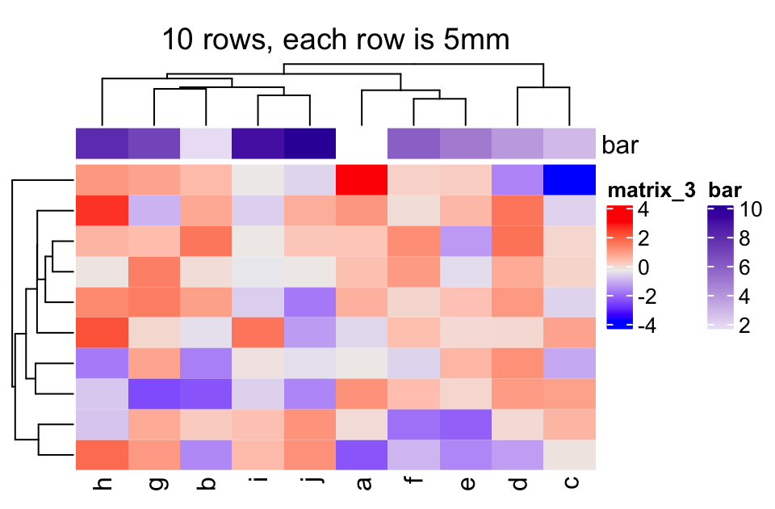
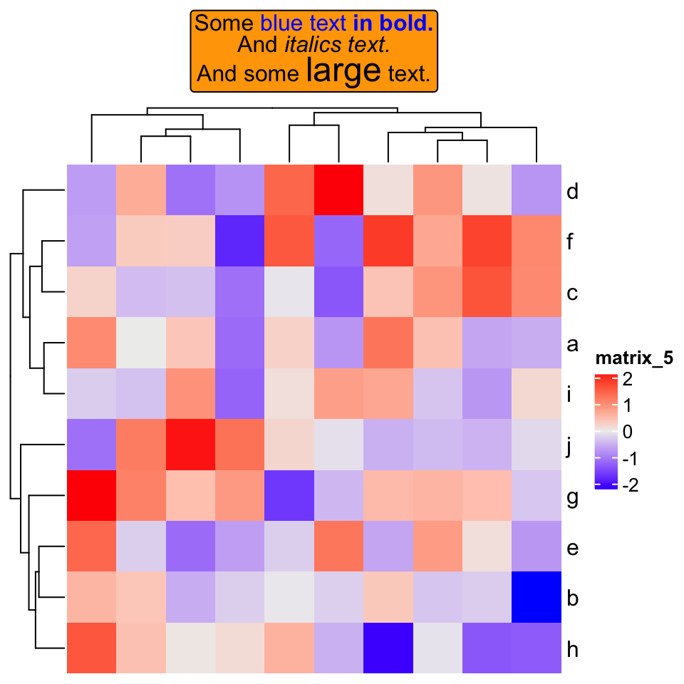

Chapter 11 Other Tricks
11.1 Set the same cell size for different heatmaps with different dimensions
Assume you have a list of heatmaps/oncoPrints that you want to save as different e.g. png or pdf files, one thing you might want to do is to make the size of each grid/cell in the heatmap identical across heatmaps, thus, you need to calculate the size of png/pdf file according to the number of rows or columns in the heatmap. In the heatmap generated by ComplexHeatmap, all the heatmap components have absolute size and only the size of the heatmap body (or the size of the cells) is changable (or in other words, if you change the size of the final graphic device, e.g. by draging the graphics window if you plot in, only the size of the heatmap body is adjusted), which means, the size of the whole plot is linearly related to the number of rows or columns in the heatmap. This implies we can actually fit a linear model y = a*x + b where e.g. y is the height of the whole plot and x is the number of rows.
In following example, we simply demonstrate how to establish the relation between the plot height and the number of rows in the heatmap. We first define a function which generates a 10-column matrix with specific number of rows. Note the values in the matrix is of no importance in this demonstration.
random_mat = function(nr) {
m = matrix(rnorm(10*nr), nc = 10)
colnames(m) = letters[1:10]
return(m)
}Since the relation is absolutely linear, we only need to test two heatmaps with different number of rows where the height of a single row is unit(5, "mm"). In the heatmap, there are also column title, column dendrogram, column annotation and the column names.
There are several things that needs to be noted in following code:
- The heatmap object should be returned by
draw()because the layout of the heatmap is calculated only after the execution ofdraw(). component_height()returns a vector of units which correspond to the height of all heatmap components from top to bottom in the heatmap. (component_width()returns the width of heatmap components).- When calculating
ht_height, we addunit(4, "mm")because on top and bottom of the final plot, there are2mmwhite borders. ht_heightneeds to be converted to a simple unit incmorinch.
In following, y contains values which are measured in inch unit.
y = NULL
for(nr in c(10, 20)) {
ht = draw(Heatmap(random_mat(nr), height = unit(5, "mm")*nr,
column_title = "foo", # one line text
top_annotation = HeatmapAnnotation(bar = 1:10)))
ht_height = sum(component_height(ht)) + unit(4, "mm")
ht_height = convertHeight(ht_height, "inch", valueOnly = TRUE)
y = c(y, ht_height)
}Then we can fit a linear relation between y and the number of rows:
x = c(10, 20)
lm(y ~ x)##
## Call:
## lm(formula = y ~ x)
##
## Coefficients:
## (Intercept) x
## 1.3150 0.1969This means the relation between the number of rows x and the height of the plot y is: y = 0.1969*x + 1.3150.
You can test whether the height of single rows are the same for heatmaps with different rows by following code. Note all the heatmap configuations should be the same as the ones you prepare y.
for(nr in c(10, 20)) {
png(paste0("test_heatmap_nr_", nr, ".png"), width = 5, height = 0.1969*nr + 1.3150,
units = "in", res = 100)
draw(Heatmap(random_mat(nr), height = unit(5, "mm")*nr,
column_title = "foo", # column title can be any one-line string
top_annotation = HeatmapAnnotation(bar = 1:10)))
dev.off()
}

11.2 Integrate with gridtext package
The gridtext package provides a nice and easy way for rendering text under the grid system. From version 2.3.3 of ComplexHeatmap, text-related elements can be rendered by gridtext.
For all text-related elements, the text needs to be wrapped by gt_render() function, which marks the text and adds related parameters that are going to be processed by gridtext.
Currently ComplexHeatmap supports gridtext::richtext_grob(), so some of the parameters for richtext_grob() can be passed via gt_render().
gt_render("foo", r = unit(2, "pt"), padding = unit(c(2, 2, 2, 2), "pt"))## [1] "foo"
## attr(,"class")
## [1] "gridtext"
## attr(,"param")
## attr(,"param")$r
## [1] 2pt
##
## attr(,"param")$padding
## [1] 2pt 2pt 2pt 2ptFor each heatmap element, e.g. column title, graphic parameters can be set by the companion argument, e.g. column_title_gp. To make it simpler, all graphic parameters set by box_gp are merged with *_gp by adding box_ prefix, e.g.:
..., column_title = gt_render("foo"), column_title_gp = gpar(col = "red", box_fill = "blue"), ...Graphic parameters can also be specified inside gt_render(). Following is the same as the one above:
..., column_title = gt_render("foo", gp = gpar(col = "red", box_fill = "blue")), ...11.2.1 Titles
set.seed(123)
mat = matrix(rnorm(100), 10)
rownames(mat) = letters[1:10]
Heatmap(mat,
column_title = gt_render("Some <span style='color:blue'>blue text **in bold.**</span><br>And *italics text.*<br>And some <span style='font-size:18pt; color:black'>large</span> text.",
r = unit(2, "pt"),
padding = unit(c(2, 2, 2, 2), "pt")),
column_title_gp = gpar(box_fill = "orange"))
If heatmap is split:
Heatmap(mat,
row_km = 2,
row_title = gt_render(c("**title1**", "_title2_")),
row_title_gp = gpar(box_fill = c("yellow", "blue")))
11.2.2 Row/column names
Rendered row/column names should be explicitly specified by row_labels/column_labels
Heatmap(mat,
row_labels = gt_render(letters[1:10], padding = unit(c(2, 10, 2, 10), "pt")),
row_names_gp = gpar(box_col = rep(c("red", "green"), times = 5)))
11.2.3 Annotation labels
annotation_label argument should be as rendered text.
ha = HeatmapAnnotation(foo = letters[1:10],
annotation_label = gt_render("**Annotation** _one_",
gp = gpar(box_col = "black")),
show_legend = FALSE)
Heatmap(mat, top_annotation = ha)
11.2.4 Text annotation
rowAnnotation(
foo = anno_text(gt_render(sapply(LETTERS[1:10], strrep, 10), align_widths = TRUE),
gp = gpar(box_col = "blue", box_lwd = 2),
just = "right",
location = unit(1, "npc")
)) + Heatmap(mat)
11.2.5 Legend
Heatmap(mat,
heatmap_legend_param = list(
title = gt_render("<span style='color:orange'>**Legend title**</span>"),
title_gp = gpar(box_fill = "grey"),
at = c(-3, 0, 3),
labels = gt_render(c("*negative* three", "zero", "*positive* three"))
))